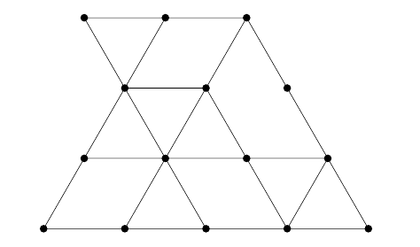

来到北京前，你准备了不少童书，许多书包含了像这样的问题：下图中有多少个三角形？
尽管这些题一开始吸引了你的兴趣，但你很快感到无聊，希望用算法来解决这样的问题。说不定今年的比赛会考到这样的问题，谁知道呢。所以今天你很幸运！
第一行包含两个正整数 $r, c$ ($r \leq 3000; c \leq 6000$)，表示顶点的行数和列数。
接下来 $2 r - 1$ 行，每行不超过 $2 c - 1$ 个字符。奇数行描述顶点 (x) 和零或多条水平边，偶数行描述零或多条对角线。
具体地，第 $4 k + 1$ 行的第 $4 l + 1$ 个字符是顶点 (x)，第 $4 k + 3$ 行的第 $4 l + 3$ 个字符是顶点 (x)，这里 $k, l \in \mathbb N$。
连接相邻顶点的水平边用 --- 表示，对角线根据方向分别用 / 和 \ 表示，位于两个端点的正中间。
其余位置均为空格，但字符串会经过 rtrim (去除行末空格)。
输出一行一个整数，表示三角形的总数。
这道题和 [JOI 2015 Final]城墙 是基本一致的，因此下面简要介绍一下不同点。
经过简单的输入处理后，我们可以得到对于每个点，它向六个方向 (LE [左]，RI [右], SW [左下], NE [右上], SE [右下], NW [左上]) 分别可以延伸多远。
由对称性，只需考虑顶点朝下的三角形的计数。对于一个顶点 $v = \left( i, j \right)$，那么以 $v$ 为顶点的 "$\bigtriangledown$" 型三角形的边长就不能超过 $D = \min \left\{ NE_{i, j}, NW_{i, j} \right\}$。
那么，对于 $1 \leq d \leq D$，它的边长能否为 $d$ 呢？这当且仅当 $RI_{i - d, j - d} \geq d$ (或 $RI_{i - d, j + d} \geq d$)。
记 $g = i - d \in \left[ i - D, i \right)$，那么一个 $g \in \left[ 1, r \right]$ 满足条件当且仅当 $$ \left( i - D \leq g \leq i - 1 \right) \wedge \left( RI_{g, g + \left( j - i \right)} + g \geq i \right) \tag 1 \label 1 $$
固定 $k = j - i$ 后，则 $RI_{g, g + \left( j - i \right)} + g = RI_{g, g + k} + g$ 是一个关于 $g$ 的函数，此时 $\eqref 1$ 就是一个二维数点模型。
即对于每个 $g \in \left[ 1, r \right]$，创建点 $\left( x_g, y_g \right) = \left( g, RI_{g, g + k} + g \right)$，然后对于每个 $i$ 统计有多少个 $g$ 满足 $$ \left( i - D \leq x_g \leq i \right) \wedge \left( y_g \geq i \right) $$
使用离线 + 树状数组解决。
对于顶点朝上的三角形的情形是完全类似地，甚至你也可以偷懒直接将输入翻转过来解决。
时间复杂度 $O \left( r c \cdot \log \min \left\{ r, c \right\} \right)$。
#include <bits/stdc++.h>
#define EB emplace_back
using std::cin;
using std::cout;
typedef unsigned char u8;
typedef unsigned int u32;
typedef std::vector <int> vector;
const int N = 3054, M = 6054;
const u8 LEFT = 1, RIGHT = 2, SOUTH_WEST = 4, NORTH_EAST = 8, SOUTH_EAST = 16, NORTH_WEST = 32;
int R, C;
u8 d[N][M];
char s[2 * M];
short LE[N][M], RI[N][M], SW[N][M], NE[N][M], SE[N][M], NW[N][M];
vector qs[N];
inline int min(const int x, const int y) {return x < y ? x : y;}
namespace BIT {
int n, x[M];
int sum(int h) {int s = 0; for (; h <= n; h |= h + 1) s += x[h]; return s;}
inline void clear() {memset(x, 0, (n + 1) << 2);}
void add(int h) {for (; h >= 0; h &= h + 1, --h) ++x[h];}
}
int main() {
int i, j, k, e; long long ans = 0;
std::ios::sync_with_stdio(false), cin.tie(NULL);
cin >> R >> C, BIT::n = R + (C + 1) / 2, cin.getline(s, 2 * M);
for (i = 0; ; ++i) {
memset(s, 0, 2 * M), cin.getline(s, 2 * M);
for (j = !(i & 1); j < C; j += 2)
if (s[2 * j] == 45) d[i][j - 1] |= RIGHT, d[i][j + 1] |= LEFT;
if (i == R - 1) break;
memset(s, 0, 2 * M), cin.getline(s, 2 * M);
for (j = 0; j < C - 1; ++j)
if (s[2 * j + 1] == 47) d[i][j + 1] |= SOUTH_WEST, d[i + 1][j] |= NORTH_EAST;
else if (s[2 * j + 1] == 92) d[i][j] |= SOUTH_EAST, d[i + 1][j + 1] |= NORTH_WEST;
}
for (i = 0; i < R; ++i)
for (j = i & 1; j < C; j += 2)
LE[i][j] = (d[i][j] & LEFT ? LE[i ][j - 2] + 1 : 0),
NE[i][j] = (d[i][j] & NORTH_EAST ? NE[i - 1][j + 1] + 1 : 0),
NW[i][j] = (d[i][j] & NORTH_WEST ? NW[i - 1][j - 1] + 1 : 0);
for (i = R - 1; i >= 0; --i)
for (j = C - ((i ^ C) & 1); j >= 0; j -= 2)
RI[i][j] = (d[i][j] & RIGHT ? RI[i ][j + 2] + 1 : 0),
SW[i][j] = (d[i][j] & SOUTH_WEST ? SW[i + 1][j - 1] + 1 : 0),
SE[i][j] = (d[i][j] & SOUTH_EAST ? SE[i + 1][j + 1] + 1 : 0);
for (k = -((R - 1) & -2); k < C; k += 2) {
BIT::clear();
for (i = 0, j = k; i < R; ++i, ++j) if ((u32)j < (u32)C)
if ((e = min(NE[i][j], NW[i][j])) < i) qs[i - e - 1].EB(i);
for (i = 0, j = k; i < R; ++i, ++j) {
if ((u32)j < (u32)C) BIT::add(i + RI[i][j]);
for (int v : qs[i]) ans -= BIT::sum(v);
if (i + 1 < R && u32(j + 1) < (u32)C) ans += BIT::sum(i + 1);
}
for (i = 0; i < R; ++i) qs[i].clear();
}
for (k = -((R - 1) & -2); k < C; k += 2) {
BIT::clear();
for (i = R - 1, j = k + i; i >= 0; --i, --j) if ((u32)j < (u32)C)
if ((e = min(SW[i][j], SE[i][j])) < R - i - 1) qs[i + e + 1].EB(i);
for (i = R - 1, j = k + i; i >= 0; --i, --j) {
if ((u32)j < (u32)C) BIT::add((R - 1 - i) + LE[i][j]);
for (int v : qs[i]) ans -= BIT::sum(R - 1 - v);
if (i > 0 && u32(j - 1) < (u32)C) ans += BIT::sum(R - i);
}
for (i = 0; i < R; ++i) qs[i].clear();
}
cout << ans << '\n';
return 0;
}
坑1：使用树状数组时记得清空和方向，以及访问时不要越界。
坑2：固定 $k = j - i$ 后枚举一个变量 (如 $i$) 时不要忘记判断是否有 $j \in \left[ 1, c \right]$。